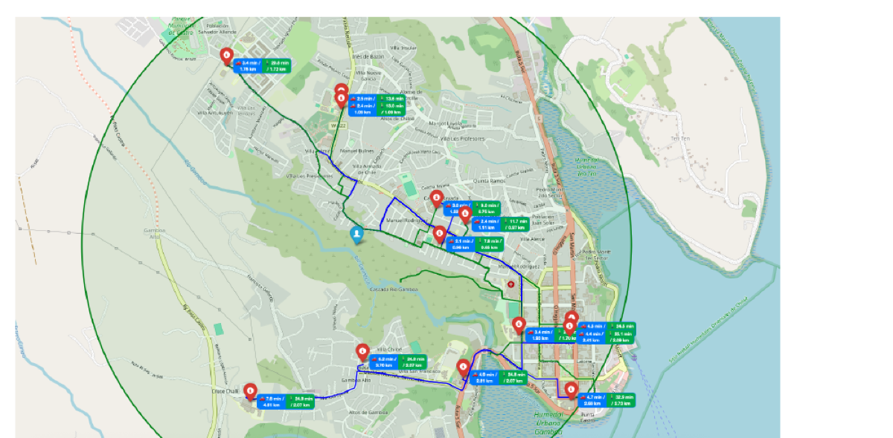
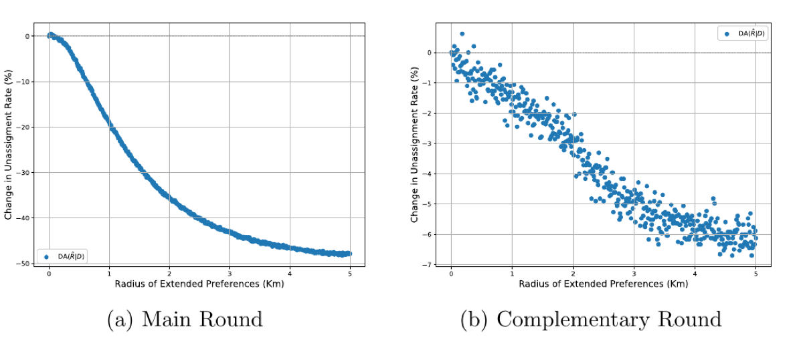
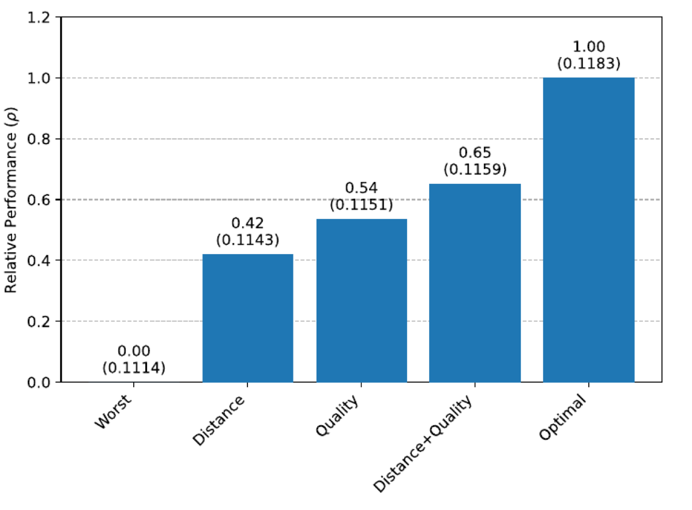

Designing Smart School Choice Recommendations: Heuristics for Sure Alternatives
Ignacio Lepe · Master’s thesis, Universidad de Chile, 2025 · Advisor: Dante Contreras
Abstract
I propose a school choice policy to recommend guaranteed school alternatives for students left unassigned under stable matching. By leveraging revealed preferences, I design a personalized recommendation mechanism that offers voluntary allocations to unlisted but potentially desirable nearby schools. Using rich administrative data from the Chilean school choice system, I simulate the proposed intervention across the full applicant pool to assess its general equilibrium effects on the resulting allocations. Results indicate that in the main round, the mechanism is able to (i) reduce the proportion of unmatched applicants by up to 50%, (ii) increase expected aggregate utility by 2–6%, and (iii) concentrate utility gains among applicants who apply to oversubscribed programs. To facilitate implementation, I develop a targeted submarket implementation that yields comparable improvements while preserving all original assignments. Overall, the policy offers a cost-effective and scalable solution to improve match outcomes by redistributing excess demand within centralized assignment systems.
Insights



Citation
@mastersthesis{lepe2025designing,
author = {Lepe, Ignacio},
title = {Designing Smart School Choice Recommendations: Heuristics for Sure Alternatives},
school = {Universidad de Chile},
year = {2025}
}Links
Thesis (Repositorio Académico, Universidad de Chile)
JEL: C78, D47, I21, I28, D83 · Keywords: school choice, market design, sure alternative